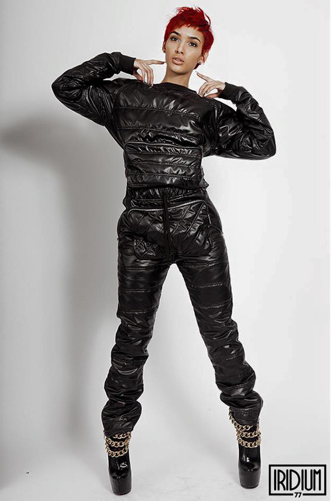

Iridium Clothing Co.
Home of elongating silhouettes and homages to the advanced style of Japanese streetwear, Iridium Clothing Co. collates current trends and futuristic designs. The brainchild of founder Mr. Platinum, a former artist stylist, Iridium is constantly redefining its limits each season. The brands notorious original design was their signature varsity jacket; the garment sliced room in Chicago's fashion scene by establishing the brand as a select creative force and redefined style in Chicago.
Years later, one subsequent building upgrade and an expansion to Atlanta, the globally recognized brand is paving their own segment into streetwear while incessantly stretching boundaries. Their most recent collection, Fall/Winter 2015, features excellent draping, precise cuts, and magnificent structure that continues to challenge familiar silhouettes of average streetwear designs.
amfm: How was Iridium born?
pugs atomz creative director of iridium: Iridium started in 2008 by the designer and founder Platinum, after earning his degree in BioChemistry from Chicago State University. He started out styling rappers and personalities like Rocsi, Common, Kanye, and Nikki Minaj to name a few. After a while he grew tired of finding the clothing and decided to create the looks he styled his clients in. I met Platinum while I was working at Power 92 and he was attending CSU, I introduced him to Rocsi when she asked if I knew a good stylist. Fast forward five years and I was living in London, but visiting my family here in Chicago and saw this MJ Thriller themed t-shirt come across my timeline. So I did what any touring artist would do, find out who made it and hit them up to cop. As I researched, I found out the shirt was from Iridium and realized I knew the guy. Platinum gave me a few items for my shows in Poland, and we kept in touch when I would come home to visit. When I moved back to Chicago I started to submit designs and did some video work for the brand and eventually became the brand’s Creative Director and set out to find our first retail location.
amfm: You spent time in China and Japan during college and your professional working life, how did this experience help mold Iridiums “aesthetic”?
iridium founder platinum: The Japanese culture is very forward in all aspects of life, including time and fashion. The appreciation for fashion was born in Japan, not only for the look, but also the feel, and the quality. The Asian culture continues to shape a variety of aspects with Iridium.
amfm: Iridium is an scientific element and often the brand references science in its designs. From the “think science” slogan to the molecular prints on neoprene fabric, what inspired the name iridum? Was it a love of science or just for aesthetic purposes?
iridium: My first love is Science. I have a biochemistry degree and was all set to go to Med School before I decided to take on the challenge of a fashion takeover. Iridium is the purest form of platinum. I didn't want to name the brand platinum, so i decided to call it Iridium instead of Platinum which is too typical of a business name. The goal is to bring an element of science to the fashion world and keep it at a platinum level and that’s the essence of Iridium.
amfm: Would you describe your varsity skull jacket a staple iridium piece or the piece that put the brand on the map? In what ways did you make your imprint into the fashion world?
iridium: It’s the piece that put us on the map. It was the piece that connected us to the world that we wanted to be a part of from a global standpoint. Our imprint isn't complete yet, were still in the process of getting our lifestyle brand in the balance. I know that we would like to add an new element of style and swag to life, not just through clothes, but our lifestyle.
amfm: What groundbreaking or new element does Iridium bring to High end street fashion? How do you combine high end fashion with street wear?
iridium: The blend of fabrics, and new technology from 3-D printing, and sustainable materials that are eco friendly and good for the environment and one’s soul, being soul conscious to society, and representing the unrepresented. We want our products to be a connection, a universal language that all aspects of life can connect with.
amfm: The second Iridium store was recently opened in Atl. What inspired this expansion, and why Atlanta? Why not LA or NYC, cities that are better known for fashion? What else can we expect from Iridium in the future?
iridium: Atlanta in our mind is one of the hottest cities - the mecca our successful black people. We felt like it was necessary to introduce the brand in a positive way in ATL. We have many clients who shop with us from the NYC, and LA area, and we felt like Atlanta is somewhat just like our hometown of Chicago where the fashion community sleeps on us. They don't realize that we are very fashionable, fashion forward, and knowledgeable of what’s current in the fashion world today. It was only right to bring Iridium to Atlanta. We fit together like a hand in a glove. The future is bright for Iridium.
|
 |
 |

For more from Iridium Clothing Co:
photo credits: Iridium Clothing Co.
contributing writer: marissa sallie